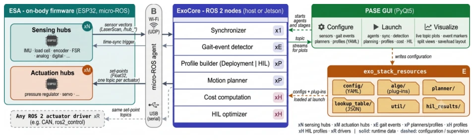

SoftEXOwalk: A Human-in-the-Loop optimized Soft Exosuit for Assisting Knee Flexion using Sensorized Pneumatic Muscles
IEEE Transactions on Medical Robotics and Bionics · 2026
Complete bibliography
4 published journal articles · 3 manuscripts under review · 15 conference papers · 3 patent families.
25 publications
IEEE Transactions on Medical Robotics and Bionics · 2026
Journal of Bionic Engineering · 2025
Vol. 22, no. 2, pp. 684–702
IEEE Robotics and Automation Letters · 2026
Submitted, 2026
Under reviewIEEE Sensors Journal · 2026
Submitted, 2026
Under review
IEEE Robotics and Automation Practice · 2026
Submitted, 2026
Under reviewIndustrial Robot · 2023
Vol. 50, no. 1, pp. 56–69
Journal of Mechanical Science and Technology · 2022
Vol. 36, no. 9, pp. 4719–4733
U.S. and Indian patent applications · 2024
U.S. 18/604,087, filed 13 March 2024; publication US 2024/0309891 A1, 19 September 2024. Related Indian application 202311017238, filed 14 March 2023.
Patent pending
Indian patent application · 2022
Application 202211021971; filed 12 April 2022
Patent pendingIndian patent application · 2022
Application 202211071703; filed 2022
Patent pending21st International Conference on Control, Automation and Systems (ICCAS) · 2021
Jeju, South Korea · pp. 903–908
IEEE International Workshop on Metrology for Industry 4.0 & IoT · 2020
Rome, Italy · pp. 369–373
6th International Conference on Advances in Robotics (AIR ’23) · 2023
IIT Ropar, India · ACM, article 77, pp. 1–8
13th Asian Control Conference (ASCC) · 2022
Jeju, South Korea · pp. 2212–2217
IEEE 19th India Council International Conference (INDICON) · 2022
pp. 1–6
5th IEEE International Conference on Recent Advances and Innovations in Engineering (ICRAIE) · 2020
pp. 1–5
5th International Conference on Advances in Robotics (AIR ’21) · 2021
Kanpur, India · ACM, article 21, pp. 1–6
4th International Conference on Electronics, Communication and Aerospace Technology (ICECA) · 2020
pp. 339–344
IEEE International Conference on Electronics, Computing and Communication Technologies (CONECCT) · 2021
pp. 1–6
4th International Conference on Advances in Robotics (AIR ’19) · 2019
IIT Madras, Chennai, India · ACM, article 58, pp. 1–7
IOP Conference Series: Materials Science and Engineering · 2020
Vol. 912, no. 2, article 022009
5th IEEE International Conference on Recent Advances and Innovations in Engineering (ICRAIE) · 2020
pp. 1–5
IEEE International Conference on Electronics, Computing and Communication Technologies (CONECCT) · 2024
pp. 1–6
IEEE International Conference on Electronics, Computing and Communication Technologies (CONECCT) · 2021
pp. 1–6
IEEE International Conference on Electronics, Computing and Communication Technologies (CONECCT) · 2022
pp. 1–6
Try a different keyword or select another category.